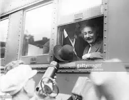

Hobbies
Albert Einstein had a wide range of interests and hobbies. Here are some of his favorites:
Playing the Violin
Albert Einstein was an accomplished amateur violinist, and often played with other musicians.
Sailing
Einstein enjoyed sailing and owned several sailboats throughout his life.
Hiking

Einstein loved hiking in the mountains and spent many summers in the Swiss Alps.
Traveling
Einstein enjoyed traveling and visited many countries throughout his life.
Reading
Einstein was an avid reader and had a large personal library.
Playing Games
Einstein enjoyed playing games, particularly chess and go.